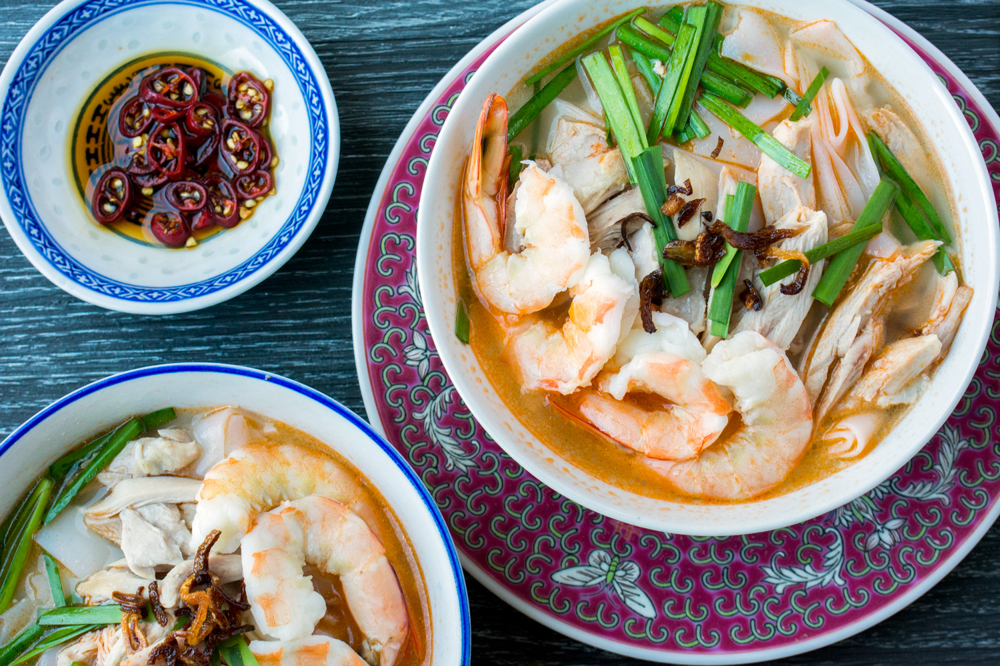

Ipoh Shredded Chicken Noodles

Prep time: 20 minutes
Ingredients
- 200g (7 oz) shrimp meat
- 400g (0.8 lb) chicken breast
- 1kg (2 lbs) flat rice noodles (Hor Fun)
- 1 Cup Bean Sprouts
- 100 g (4 oz) chives, cut into 3 cm segments
- 3 stalks of scallions, cut into short sections
- 3 stalks of chives
- 3 fresh red chilies, sliced
- 4 tbsp crispy fried shallots
Soup Base
- 1.4 kg (3lbs) chicken bone
- Sufficient water to submerge the chicken
- 1 Tbsp Whole White Peppercorns
- 30g (1 oz) rock Sugar
- 2 tsp Salt
- 500g (1 lb) Shrimp Shells
- 100ml (3.5 oz) cooking oil ( for frying the shrimp heads)
Instructions
Chicken and shrimp broth
-
Pace the chicken bones in a pot with cold water enough to cover all
the bones. Skim away the scum floating on the surface. Add the
peppercorn. Simmer over low heat for one hour.
-
Stir-fry the shrimp heads until fragrant and turn golden, which takes
about 15 to 20 minutes. Strain the shrimp heads and keep the excess
shrimp oil separately.
-
Add the fried shrimp heads to the chicken broth and simmer over low
heat for 20 minutes.
-
Strain the broth with a strainer or cloth bag. Season with rock sugar
and salt.
Others
-
Simmer the chicken breast meat in the clean stock until it is cooked,
which takes about 15 minutes.
- Shred to become chicken floss.
- Poach the shrimp in the broth. Set aside.
-
Slice the shallots thinly. Deep-fried over low heat until crispy and
brown. Pour it through a wire mesh strainer to remove the excessive
oil.
To assemble
-
Blanch the noodles, bean sprouts, and chives separately in hot water
for 20 seconds.
-
Put the hot hor fun in a large bowl, top with the shredded chicken,
bean sprouts, shrimps, fried shallots, chives, red chili, and
scallions. Ladle the hot stock over the noodles. Add a teaspoon of the
fragrant shrimp oil and serve immediately.